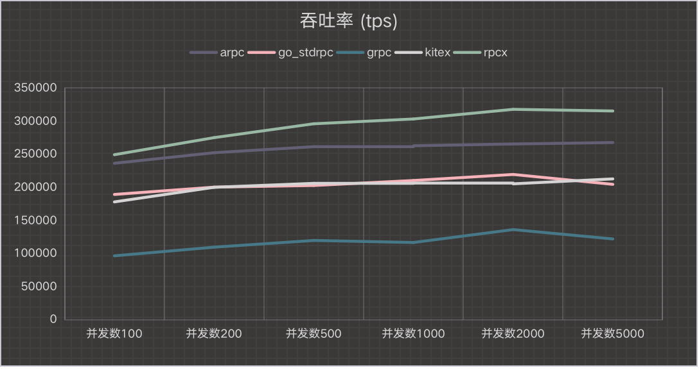
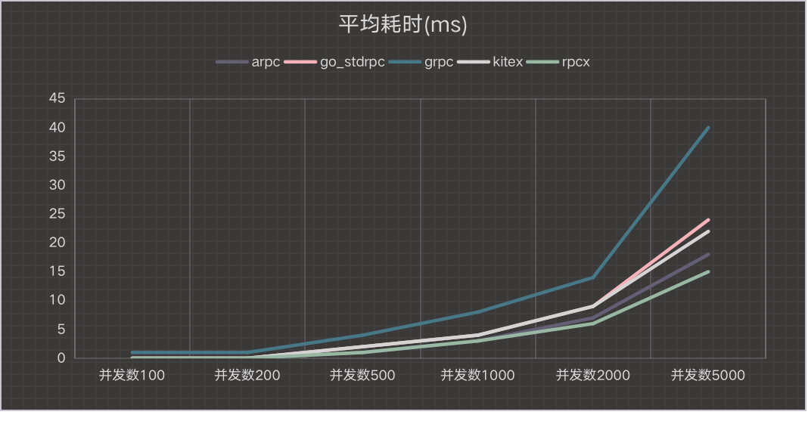
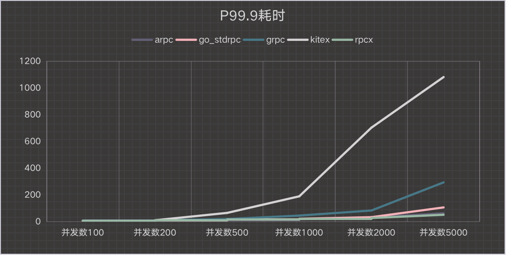
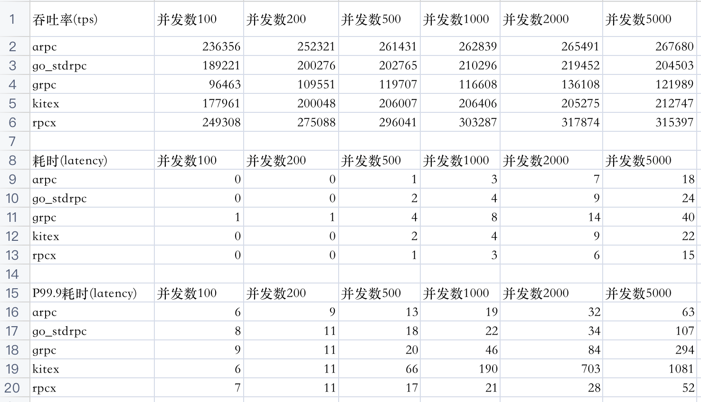

有朋友问，每年年初的时候我会发布一个rpc的框架的大比拼，今年为啥没有了？
有几个原因，一是我去年下半年换了一份工作，熟悉新的业务耗费了很大精力，导致博客文章相对少了，开源的贡献也少了，二是rpcx我自己觉得性能已经很不错了没有想着进一步的优化，所以也没有做相应的benchmark比较。
前几个星期头条的同学推出他们的rpcx框架kitex,据说性能要比rpcx和grpc好很多，加上今年GopherChina2021大会上他们也分享了他们的netpoll的优化。
本来，我对自定义epoll一类的框架如evio、gnet是不感冒的，因为go本身的net库也是基于epoll实现的，只不过这类框架在处理epoll事件之后的处理和标准库是不一样的。在GopherChina大会上我也和小伙伴说，我担心的这类框架的"长尾效应",也就是从客户端视角看，大大并发的情况下latency的长尾效应可能是一个很大的痛点。这个话题我一直想专门写一篇文章探讨一下，希望这个秋季能出一篇深度分析标准库和自定义epoll的文章。
当然，既然头条的同学测试kitex性能不错，那么我也就把kitex加入到我的rpc benchmark项目中了,并且在这个周末也对几种Go rpc框架做了benchmark对比,我想自己测试看看这些框架的性能表现。
当然，每次发表benchmark文章，我都会先声明，没有一个benchmark可以全面的反应这些框架的完整的性能的，更不用说完整的特性了。每个人在使用rpc框架时，面对的场景可能都不同，有些是CPU敏感的服务、有的是IO敏感的服务、有的是内存敏感的服务、有的是读数据库的服务、有的是提供缓存的服务、有些是写文件的服务，消息的长度有大有小、消息的编码格式也不尽相同，有的是同步调用，有的是异步调用，有些是同机房的调用，有些是跨机房的调用，有些用tcp，有些用udp,......,各种各样五花八门，所以没有一种benchmark可以涵盖所有的场景。这次我做的benchmark，也只是覆盖了其中的一种场景。但是幸运的是，这个项目提供了一个框架，可以根据你的场景自己定制，如果你感兴趣，你可以在这个项目的基础上做一些修改，以便和你的使用场景做匹配。
另外，性能只是比较rpc框架的一个方面，千万不要因为测试结果A框架比B框架好就拿去吹嘘，那是幼稚的表现。另外也不可能Go生态圈只有一个框架存在，目前Go生态圈至少有十几个框架存在，各有特色。我个人对于Go生态圈的微服务框架持开放态度，而且也会了解和学习其它框架的优点，让rpcx框架变得更好，我相信·其他开发者也是这么想的。
想比以前的测试，我把Dubbo、Motan、Tarsgo等rpc框架去掉了。我个人不认为这些框架真的适合Go生态群的开发。Go的设计哲学就是简单，这几种框架都需要复杂的配置。当然我知道这些框架原先是Java、C++语言的，只不过为了跨语言才port到Go生态圈，导致这些框架的使用非常的复杂，因为为了保持和主语言的框架的兼容。如果单纯的Go生态圈的使用的话，我还是建议挑选简单可依赖的纯Go生态圈的框架。
为了尽量保持一致的测试环境，所有的框架统一遵循下面的约定：
- 分别测试并发数为100、200、500、1000、2000、5000的场景，测试单个服务在面对不同并发量的情况下的性能。
- 从客户端统计吞吐率和延迟(latency)
- 采用共享的client。创建一定数量的client作为client池。
- 所有的框架都是在“公平”的情况下测试。测试数据都是一致的，采用protobuf进行测试。虽然有比Protobuf性能更好的序列化框架，但是因为不具有通用性所以不考虑。
- 测试会进行预热。
- 避免coordinated omission:测试统计的是等待时间+服务时间,而不是服务端服务时间
- 统计既包含平均值，也包含P99.9值。
测试环境
- Intel(R) Xeon(R) Silver 4110 CPU @ 2.10GHz,2颗
- 总物理核 8个， 开超线程逻辑核数为 32个
- 内存 128G
- Go 1.16.6
- 各框架版本
- arpc: 1.1.5
- go std rpc: 1.16.6
- grpc: 1.39.0
- kitex: 0.0.3
- rpcx: 1.6.5
测试是在单机上进行的。 坏处就是测试是没有像实际情况一样经过实际网络，而是本机网络支持处理，好处就是我们可以刨去长距离或者不好的网络的影响，只关注于rpc框架的处理。
测试步骤
生成每个框架的服务端和客户端:
|
|
启动服务端:
|
|
客户端测试(并发数100)
|
|
每个场景会发送一千万个请求，内容一个不大不小的protobuf编码的数据，服务端收到后会设置某个字段为OK,并返回。没有复杂的计算。
相对于简单的echo 字符串的服务，消息体适中，编码格式通用，业务处理简单，耗时很短吞吐率有保障。
测试结果
当前对5种rpc框架做了测试，有些是普通的rpc服务，比如arpc、Go标准库中的rpc、有些是支持微服务治理的框架如kitex、rpcx，有些是有一些微服务治理的功能如grpc。测试的时候，并没有测试他们的微服务治理的功能，而是只是测试了他们简单的rpc调用。
实际测试是，发现kitex在并发数为2000的时候，客户端调用会有少量出错，并发数为5000时，会有10+%的调用出错。
吞吐率 (越高越好)
也就是每秒完成的调用数。

延迟(平均耗时，越小越好)
单位毫秒。

延迟(P99.9耗时，越小越好)
单位毫秒。

原始测试数据

简单总结
arpc表现亮眼，吞吐率和耗时表现都不错。它是一个类似go web编程风格的rpc框架，采用router和handler的方式实现服务，值的学习。
kitex在并发量小的时候吞吐率要比rpcx要好，随着并发量增多，吞吐率基本差不多，吞吐率在大一些，它的长尾效应很明显P99.9延迟很高，这符合我对自定义epoll框架的推测。如果有小伙伴有不同的想法，欢迎发送评论。
Go标准库rpc框架中规中矩。
rpcx框架表现优异，在各种并发量的情况下都领先，并且没有明显的长尾效应。
grpc本来也是很不错的框架，但是性能和这几位比起来，还稍差一些。
通过这次测试，我对rpcx当前的性能有了一个大致的了解，并且通过对其它rpc框架测试，又进一步优化了rpcx的性能。
可能这个测试对于基于netpoll的kitex不"公平"，我的理解是自定义netpoll适合那种有巨量socket连接，并发量适中的场景。